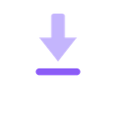
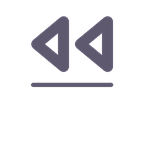

Clip your game
from a key.
Save a clip, take a screenshot, switch the replay buffer and record. The keys show what's happening.

1:002:58
12:34
Save a clip, take a screenshot, switch the replay buffer and record. The keys show what's happening.

1:00Give every key its own length. The number on the key is exactly what a press will save.
The keys follow ClippiBoy, even when you switch it from a hotkey, the tray or the app.

offFound by itself — nothing to set up.
How much of the 3:00 buffer this key saves. Put two keys side by side for two lengths.
Works with the free ClippiBoy app for Windows 10 and 11.
The last seconds of your game as a clip.
Into ClippiBoy's folder and gallery.
On and off, with the buffer level on the key.
Start and stop, with the time on the key.